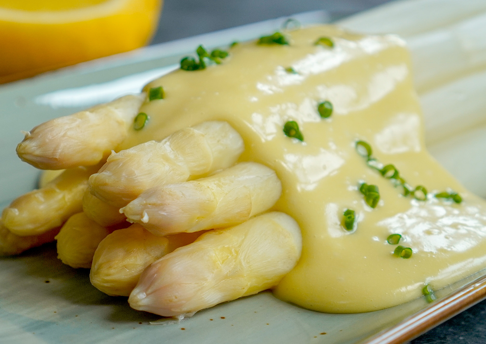

Zutaten:
- 0.5
- 3
- 4
- 1
- 100 ml
- 100 ml
- 2 ml
- 120 g
- 1 Prisen
- 2 Prisen
- 1 Prisen
- 0.25
- 3 Tropfen
- Schalotten
- Nelken
- Wacholderbeeren
- Lorbeerblatt
- Wasser
- Weißwein
- Eier
- Butter
- Zucker
- Salz
- Weißer Pfeffer
- Zitronen
- Worcester Sauce
Kochmodus:
Zubereitung:
- 0.5 Schalotten, 3 Nelken, 4 Wacholderbeeren, 1 Lorbeerblatt, 100 ml Wasser und 100 ml Weißwein in einem Topf auf mittlerer Hitze auf die Hälfte Reduzieren lassen.
- Die Weißweinreduktion durch ein feines Sieb geben und die Schalotten, Nelken, Wacholderbeeren und Lorbeerblatt entfernen.
- 120 g Butter in einem kleinen Topf schmelzen lassen.
- Einen kleinen Topf mit wenig Wasser (ca. 200 ml) aufstellen und nur leicht sieden lassen.
- In einer Metallschüssel 2 Eigelb mit 2 EL Weißweinreduktion mit einem Schneebesen vermengen.
- Die Schüssel nun über den Topf geben und mit gleichmäßigen Bewegungen im Handgelenk die Eiermasse rühren, bis sie immer heller, cremiger und luftiger wird. Die Hollandaise dabei immer mal wieder vom Wasserbad nehmen und kontrollieren, dass das Wasser im Topf nicht wallend kocht.
- Die Soße ist fertig, wenn der Schneebesen tiefe Fugen beim Durchgleiten hinterlässt.
- Die Soße vom Wasserbad nehmen und nun nach und nach die flüssige Butter unterrühren.
- Mit 1 Prise Zucker, 2 Prisen Salz, 1 Prise weißem Pfeffer, dem Saft von 0.25 Zitronen und 3 Tropfen Worcester Sauce abschmecken.